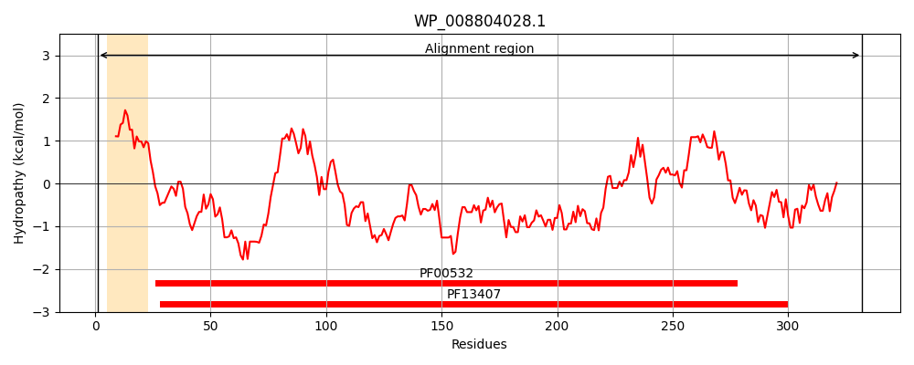
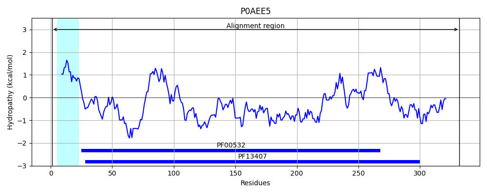
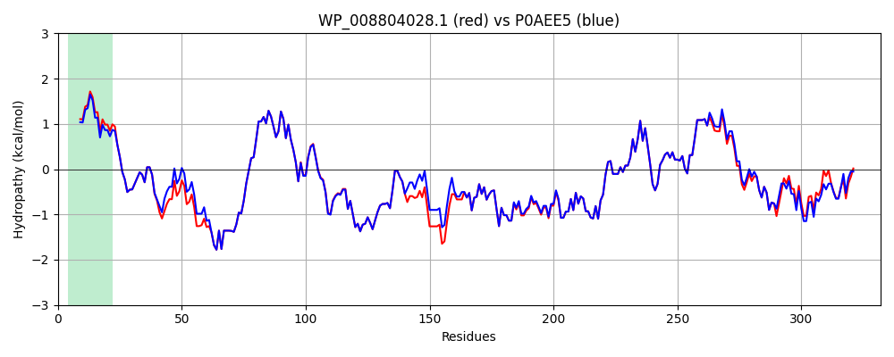

Hit Accession: P0AEE5
Hit TCID: 3.A.1.2.3
Hit Description: gnl|BL_ORD_ID|8780 gnl|TC-DB|P0AEE5|3.A.1.2.3 D-galactose-binding periplasmic protein - Escherichia coli.
Mach Len: 332
e:0.000000
Query TMS Count : 1
Hit TMS Count: 1
TMS-Overlap Score: 0.950000
Predicted Substrates:CHEBI:5418;glucose, CHEBI:5256;galactose
BLAST Alignment:
Score: 1602 , Bit scores: 621 bits, E-value: 0.0e+00, Alignment length: 332, Percentage identity: 94
Query: 1 MNKKVFTLSAVMAGLLFGAAAHAADTRIGVTIYKYDDNFMSVVRKAIEKDGKSAPDVQLLMNDSQNDQSKQNDQIDVLLAKGVKALAINLVDPAAAGTVIEKARGQNIPVVFFNKEPSRKALDSYDKAYYVGTDSKESGIIQGDLIAKHWKANPNWDLNKDGQIQFVLLKGEPGHPDAEARTTYVIKELNDKGLKTQQLQLDTAMWDTAQAKDKMDAWLSGPNANKIEVVIANNDAMAMGAVEALKAHNKSSIPVFGVDALPEALALVKSGAMAGTVLNDANNQAKATFDLAKNLAEGKEAAAGTNWKIDNKIVRVPYVGVDKDNLSQFTGK 332
MNKKV TLSAVMA +LFGAAAHAADTRIGVTIYKYDDNFMSVVRKAIE+D K+APDVQLLMNDSQNDQSKQNDQIDVLLAKGVKALAINLVDPAAAGTVIEKARGQN+PVVFFNKEPSRKALDSYDKAYYVGTDSKESGIIQGDLIAKHW AN WDLNKDGQIQFVLLKGEPGHPDAEARTTYVIKELNDKG+KT+QLQLDTAMWDTAQAKDKMDAWLSGPNANKIEVVIANNDAMAMGAVEALKAHNKSSIPVFGVDALPEALALVKSGA+AGTVLNDANNQAKATFDLAKNLA+GK AA GTNWKIDNK+VRVPYVGVDKDNL++F+ K
Sbjct: 1 MNKKVLTLSAVMASMLFGAAAHAADTRIGVTIYKYDDNFMSVVRKAIEQDAKAAPDVQLLMNDSQNDQSKQNDQIDVLLAKGVKALAINLVDPAAAGTVIEKARGQNVPVVFFNKEPSRKALDSYDKAYYVGTDSKESGIIQGDLIAKHWAANQGWDLNKDGQIQFVLLKGEPGHPDAEARTTYVIKELNDKGIKTEQLQLDTAMWDTAQAKDKMDAWLSGPNANKIEVVIANNDAMAMGAVEALKAHNKSSIPVFGVDALPEALALVKSGALAGTVLNDANNQAKATFDLAKNLADGKGAADGTNWKIDNKVVRVPYVGVDKDNLAEFSKK 332 | Protein Hydropathy Plots: |
|---|
|  |  |
Pairwise Alignment-Hydropathy Plot:
|
|---|
|  |